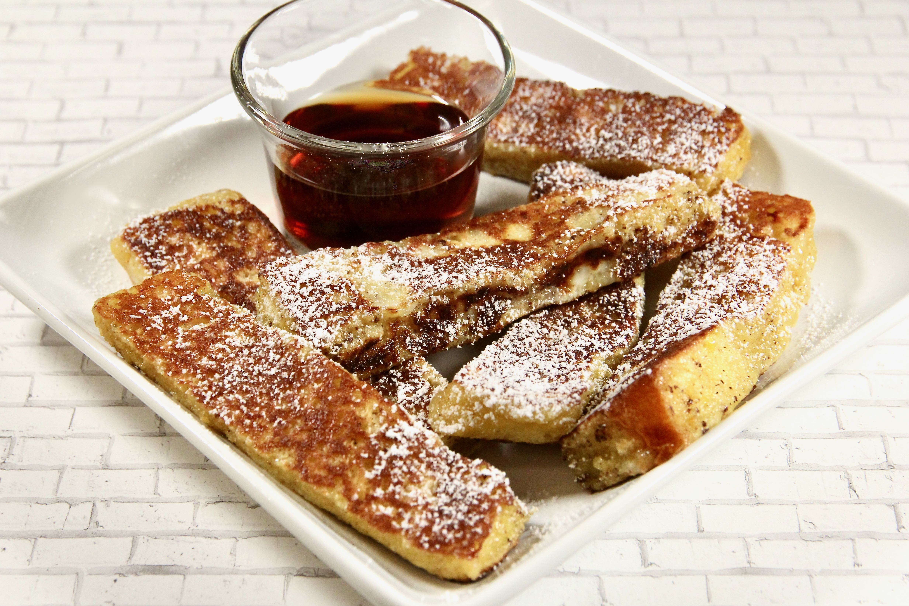

French Toast Sticks

French Toast Sticks Recipe
This french toast stick recipe is for 18 sticks.
It will take about a total of 20 minutes to prepare and cook.
Ingredients
- 2 large eggs
- 1/2 cup powdered sugar
- 1/4 cup milk
- 2 tablespoons maple syrup
- 1 teaspoon brown sugar
- 1/4 teaspoon ground cinnamon
- 6 slices white bread, cut into thirds
- nonstick cooking spray
Steps
- Mix eggs, powdered sugar, milk, maple syrup, brown sugar, and cinnamon together in a bowl with a fork until well blended.
- Dip each bread stick into the mixture.
- Add nonstick spray to a skillet and heat over medium heat.
- Place sticks on the skillet and cook until brown; 2-3 min.
- Turn the stick over and cook until browned;2-3 min.
- Repeat for all the sticks.